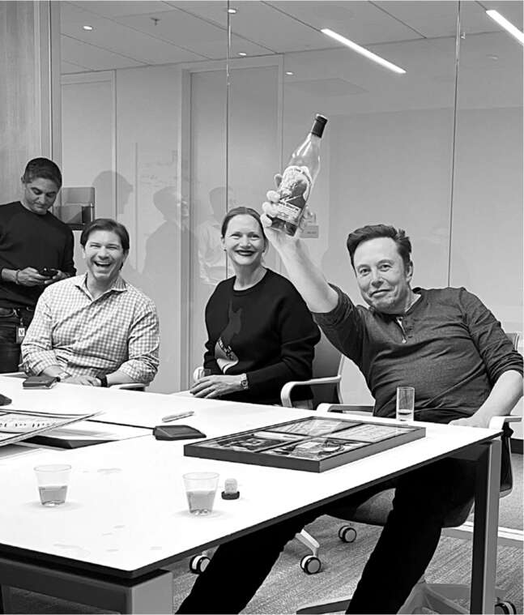
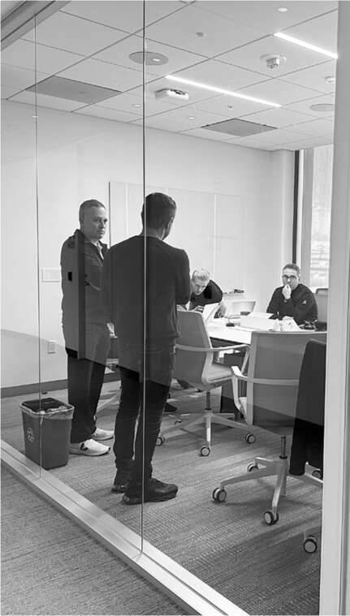

Chuông đóng cửa
Thương vụ mua lại Twitter dự kiến kết thúc vào thứ Sáu, ngày 28 tháng 10. Đó là những gì ban quản lý Twitter nghĩ, cũng như công chúng và Phố Wall. Một quá trình chuyển giao trật tự đã được lên kế hoạch cẩn thận cho phiên giao dịch chứng khoán sáng hôm đó. Tiền sẽ được chuyển, các tài liệu sẽ được ký kết, cổ phiếu sẽ bị hủy niêm yết, và Musk sẽ nắm quyền kiểm soát. Điều này sẽ tạo ra tác động kép - hủy niêm yết cổ phiếu và thay đổi quyền kiểm soát - cho phép Parag Agrawal và các cấp phó hàng đầu của Twitter nhận tiền thôi việc và hưởng quyền chọn mua cổ phiếu.
Nhưng Musk không muốn điều đó, và anh ta đã bí mật lên kế hoạch với nhóm của mình để phá vỡ mọi thứ. Trong suốt chiều thứ Năm, anh ta đi ra đi vào một phòng họp chật chội, nơi Antonio Gracias, Alex Spiro, Jared Birchall và một vài người khác đang lên kế hoạch tỉ mỉ cho một đòn tấn công bất ngờ: họ sẽ buộc phải hoàn tất thương vụ vào tối thứ Năm. Nếu căn chỉnh thời gian chính xác, Musk có thể sa thải Agrawal và các giám đốc điều hành hàng đầu khác của Twitter vì "lý do chính đáng" trước khi quyền chọn mua cổ phiếu của họ có hiệu lực.
Điều này có phần táo bạo, thậm chí tàn nhẫn. Nhưng nó được biện minh trong suy nghĩ của Musk vì cái giá anh ta phải trả và niềm tin rằng ban quản lý Twitter đã lừa dối anh ta. "Có hai trăm triệu đô la chênh lệch giữa việc đóng giao dịch tối nay và sáng mai", anh ta nói với tôi vào chiều muộn thứ Năm trong phòng họp khi kế hoạch đang diễn ra.
Ngoài việc trả thù và tiết kiệm một khoản tiền, còn có một trò chơi tâm lý đang thúc đẩy Musk. Màn kết thúc bất ngờ sẽ rất kịch tính, giống như một cuộc tấn công đúng thời điểm trong Polytopia.
Vị tướng lĩnh cho việc đóng cửa bất ngờ vào tối thứ Năm là luật sư lâu năm của Musk, Alex Spiro. Một tay súng pháp lý sắc sảo và hài hước, anh ta luôn háo hức chiến đấu. Anh ta đã trở thành cố vấn đáng tin cậy của Musk trong cơn bão năm 2018, khi anh ta giúp Musk chống đỡ các đòn phản công pháp lý từ các tweet "kẻ ấu dâm" và "chuyển sang tư nhân" của mình. Musk đặt ra quy tắc phải cảnh giác với bất kỳ ai có sự tự tin lớn hơn năng lực của họ. Spiro có cả hai ở mức độ cực kỳ cao, điều này khiến Musk coi trọng anh ta, mặc dù đôi khi phải thận trọng.
"Chúng ta không thể sa thải Parag cho đến khi anh ta ký giấy chứng nhận, phải không?", Musk hỏi tại một thời điểm.
"Tôi muốn sa thải họ trước khi mọi việc hoàn tất", Spiro trả lời. Anh ta kiểm tra với các đồng nghiệp và tìm ra các lựa chọn khi họ chờ đợi số tham chiếu của Cục Dự trữ Liên bang cho thấy tiền đã được chuyển.
Lúc 4:12 chiều giờ Thái Bình Dương, khi họ đã xác nhận rằng tiền đã được chuyển và các tài liệu cần thiết đã được ký kết, Musk và nhóm của anh ta đã kích hoạt để hoàn tất thỏa thuận. Jehn Balajadia, một trợ lý lâu năm của Musk, người đã được gọi lại để hỗ trợ việc tiếp quản Twitter, đã gửi thư sa thải cho Agrawal, Ned Segal, Vijaya Gadde và cố vấn chung Sean Edgett ngay tại thời điểm đó. Sáu phút sau, nhân viên an ninh cấp cao của Musk vào báo cáo rằng tất cả đã bị "đuổi" khỏi tòa nhà và quyền truy cập email của họ đã bị cắt.
Việc cắt email ngay lập tức là một phần của kế hoạch. Agrawal đã chuẩn bị sẵn thư từ chức của mình, với lý do thay đổi quyền kiểm soát. Nhưng khi email Twitter của anh ta bị cắt, anh ta mất vài phút để chuyển tài liệu sang Gmail. Vào thời điểm đó, anh ta đã bị Musk sa thải.
"Anh ta đã cố gắng từ chức", Musk nói.
"Nhưng chúng ta đã nhanh hơn", Spiro đáp.
Tại một khu vực khác trong trụ sở Twitter, công ty đang tổ chức tiệc Halloween với những cái ôm tạm biệt, được gọi là "Trick or Tweet". Birchall nói đùa với những người khác trong phòng họp, "Ned Segal đến dự tiệc trong trang phục Giám đốc Tài chính". Tại các phòng họp gần đó, một số kỹ sư SpaceX đang dán mắt vào màn hình video trên máy tính. Ngay sau 6 giờ chiều, một tên lửa Falcon 9 đã được phóng từ Vandenberg mang theo 52 vệ tinh Starlink.
Michael Grimes, giám đốc ngân hàng tại Morgan Stanley, đã bay từ Los Angeles đến phòng họp với những món quà. Đầu tiên là một đoạn phim ngắn về lịch sử bảo vệ quyền tự do ngôn luận, bắt đầu từ John Milton năm 1644 và kết thúc bằng cảnh Musk bước vào trụ sở Twitter và nói: "Hãy để điều đó thấm vào!". Ông cũng mang theo một chai Pappy Van Winkle, loại rượu bourbon ngon nhất thế giới, mà vợ ông đã nhận được vào ngày sinh nhật. Mọi người cùng nhau nhấp môi thưởng thức, sau đó Musk ký tên lên chai rượu đã vơi một nửa cho vợ.
Vài phút sau, ông đã thực hiện điều chỉnh sản phẩm đầu tiên. Trước đó, khi mọi người truy cập trang web Twitter.com, màn hình đầu tiên họ nhìn thấy là màn hình yêu cầu đăng nhập. Musk cảm thấy họ nên được chuyển đến trang "Khám phá", hiển thị những nội dung đang hot và thịnh hành. Một tin nhắn được gửi đến người phụ trách trang Khám phá, một kỹ sư trẻ tên là Tejas Dharamsi, người tình cờ đang trên chuyến bay trở về từ chuyến thăm gia đình ở Ấn Độ. Anh trả lời rằng sẽ sửa lỗi khi đến văn phòng vào thứ Hai. Anh được yêu cầu thực hiện ngay lập tức. Vì vậy, sử dụng Wi-Fi trên chuyến bay của United, anh đã thực hiện thay đổi ngay trong đêm hôm đó. "Chúng tôi đã nghiên cứu nhiều tính năng mới tiềm năng trong nhiều năm, nhưng chưa ai đưa ra quyết định về chúng", anh nói sau đó. "Đột nhiên, chúng tôi có một người đưa ra quyết định nhanh chóng."
Musk đang ở tại nhà của David Sacks. Khi ông trở về vào khoảng 9 giờ tối, Ro Khanna, nghị sĩ Đảng Dân chủ địa phương, đã có mặt ở đó. Khanna là một người ủng hộ quyền tự do ngôn luận am hiểu công nghệ, nhưng cuộc trò chuyện không phải về Twitter. Thay vào đó, họ thảo luận về vai trò của Tesla trong việc đưa ngành sản xuất trở lại Mỹ và nguy cơ không tìm được giải pháp ngoại giao cho cuộc chiến ở Ukraine. Đó là một cuộc trò chuyện sôi nổi kéo dài gần hai tiếng đồng hồ. "Ông ấy vừa hoàn tất thương vụ Twitter, và tôi ngạc nhiên là chúng tôi không nói về điều đó", Khanna nói. "Dường như ông ấy muốn nói về những điều khác."

Antonio Gracias, Kyle Corcoran, Kate Claassen và Musk với rượu bourbon Pappy Van Winkle

David Sacks và Gracias đứng trong phòng chiến lược